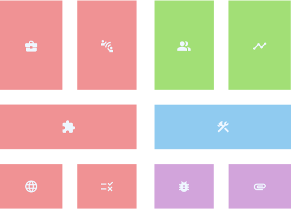

The blocks
Research
User interface
User experience
Development


The complex interface canvas is visual tool that helps designers design complex digital interfaces. It allows the designer to understand, design and comunicate the project.
It is a visual poster composed by ten blocks that represent differents challenges from working with complex digital interfaces and methods and strategies to cooperate with those challenges.
A complex digital interface is any digital interface that suports broad, unstructured goals and/or non-linear workflows, normaly designed for a specilized domain and used by specilize users. On the other hand, a simple interface is defined as, a generalist interface for everyday domains and that normaly has a linear workflow, with structured gloals and for nonspecialized users.
Uber
Adobe After Effects